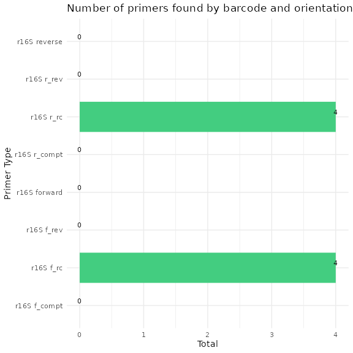
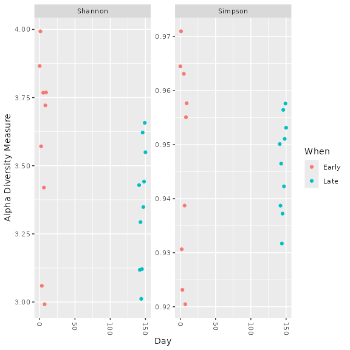

16S Mothur SOP Validation
Source:vignettes/articles/DADA2_16S_mothur_validation.Rmd
DADA2_16S_mothur_validation.RmdIntroduction
This vignette shows how demulticoder was used to analyze the mothur
16S SOP dataset featured in dada2
tutorials
The raw read files and information on the dataset used for this analysis can be found here
Load the demulticoder R package and necessary dependencies
For now, the package will be loaded by retrieving it from GitHub. We are submitting package to CRAN.
devtools::install_github("grunwaldlab/demulticoder", force=TRUE)
library("demulticoder")
library("metacoder")
library("phyloseq")
library("dplyr")
library("RCurl")Setup data directory
Download read files and associated data in your specified location.
The default is to write to tempdir().
Ensure your computer has sufficient storage and that you change the destination_folder path to a location where you have space and can save files to.
temp_dir <- tempdir()
demulticoder_temp_dir <- file.path(temp_dir, "demulticoder_sop_run")
dir.create(demulticoder_temp_dir, recursive = TRUE)
# Adjust output directory names as you like
run_folder <- demulticoder_temp_dir
data_folder <- file.path(run_folder, "MiSeq_SOP")
output_folder <- file.path(run_folder, "sop_16S_demulticoder_outputs")
mothur_sop_path <- "https://mothur.s3.us-east-2.amazonaws.com/wiki/miseqsopdata.zip"
downloaded_read_path <- file.path(run_folder, "miseqsopdata.zip")
if (!file.exists(downloaded_read_path)) {
bin <- RCurl::getBinaryURL(mothur_sop_path)
writeBin(bin, downloaded_read_path)
unzip(downloaded_read_path, exdir = run_folder)
cat("Files downloaded:", downloaded_read_path, "\n")
print(list.files(run_folder)) # Print contents of the directory
} else {
cat("Files already exist:", downloaded_read_path, "! Skipping download.\n")
}
#> Files downloaded: /tmp/Rtmp8rQQx4/demulticoder_sop_run/miseqsopdata.zip
#> [1] "MiSeq_SOP" "miseqsopdata.zip"We now have an unzipped directory in our desired destination called MiSeq_SOP
We will also need to rename our files so they are more in line with the file name conventions specified by demulticoder see Documentation
#We will remove the "001 appended at the end of the filename
files <- list.files(data_folder)
for (file in files) {
new_name <- gsub("_001", "", file)
old_file_path <- file.path(data_folder, file)
new_file_path <- file.path(data_folder, new_name)
rename_result <- file.rename(old_file_path, new_file_path)
}Add CSV input files to the data directory
Let’s now create our metadata.csv input file
The only required columns are the first with sample names, and the second with the primer name/barcode used. The subsequent columns (‘Day’ and ‘When’) are necessary for downstream steps with the phyloseq package.
metadata <- data.frame(
sample_name = c("F3D0_S188_L001", "F3D1_S189_L001", "F3D141_S207_L001", "F3D142_S208_L001",
"F3D143_S209_L001", "F3D144_S210_L001", "F3D145_S211_L001", "F3D146_S212_L001",
"F3D147_S213_L001", "F3D148_S214_L001", "F3D149_S215_L001", "F3D150_S216_L001",
"F3D2_S190_L001", "F3D3_S191_L001", "F3D5_S193_L001", "F3D6_S194_L001",
"F3D7_S195_L001", "F3D8_S196_L001", "F3D9_S197_L001", "Mock_S280_L001"),
primer_name = rep("r16S", 20),
Day = c(0, 1, 141, 142, 143, 144, 145, 146, 147, 148, 149, 150, 2, 3, 5, 6, 7, 8, 9, NA),
When = c(rep("Early", 2), rep("Late", 10), rep("Early", 7), NA)
)While you can construct your CSV files in Excel, here we construct and save our metadata file in our data directory directly in R.
#Let's define a variable that stores our data directory path
metadata_dir_path <- file.path(data_folder, "metadata.csv")
write.csv(metadata, metadata_dir_path, row.names = FALSE)
print(metadata)
#> sample_name primer_name Day When
#> 1 F3D0_S188_L001 r16S 0 Early
#> 2 F3D1_S189_L001 r16S 1 Early
#> 3 F3D141_S207_L001 r16S 141 Late
#> 4 F3D142_S208_L001 r16S 142 Late
#> 5 F3D143_S209_L001 r16S 143 Late
#> 6 F3D144_S210_L001 r16S 144 Late
#> 7 F3D145_S211_L001 r16S 145 Late
#> 8 F3D146_S212_L001 r16S 146 Late
#> 9 F3D147_S213_L001 r16S 147 Late
#> 10 F3D148_S214_L001 r16S 148 Late
#> 11 F3D149_S215_L001 r16S 149 Late
#> 12 F3D150_S216_L001 r16S 150 Late
#> 13 F3D2_S190_L001 r16S 2 Early
#> 14 F3D3_S191_L001 r16S 3 Early
#> 15 F3D5_S193_L001 r16S 5 Early
#> 16 F3D6_S194_L001 r16S 6 Early
#> 17 F3D7_S195_L001 r16S 7 Early
#> 18 F3D8_S196_L001 r16S 8 Early
#> 19 F3D9_S197_L001 r16S 9 Early
#> 20 Mock_S280_L001 r16S NA <NA>metadata.csv
#> sample_name primer_name Day When
#> 1 F3D0_S188_L001 r16S 0 Early
#> 2 F3D1_S189_L001 r16S 1 Early
#> 3 F3D141_S207_L001 r16S 141 Late
#> 4 F3D142_S208_L001 r16S 142 Late
#> 5 F3D143_S209_L001 r16S 143 Late
#> 6 F3D144_S210_L001 r16S 144 Late
#> 7 F3D145_S211_L001 r16S 145 Late
#> 8 F3D146_S212_L001 r16S 146 Late
#> 9 F3D147_S213_L001 r16S 147 Late
#> 10 F3D148_S214_L001 r16S 148 Late
#> 11 F3D149_S215_L001 r16S 149 Late
#> 12 F3D150_S216_L001 r16S 150 Late
#> 13 F3D2_S190_L001 r16S 2 Early
#> 14 F3D3_S191_L001 r16S 3 Early
#> 15 F3D5_S193_L001 r16S 5 Early
#> 16 F3D6_S194_L001 r16S 6 Early
#> 17 F3D7_S195_L001 r16S 7 Early
#> 18 F3D8_S196_L001 r16S 8 Early
#> 19 F3D9_S197_L001 r16S 9 Early
#> 20 Mock_S280_L001 r16S NA <NA>Now, make our primerinfo_params.csv input file
We then make and save the second CSV input file with the name of the
metabarcode used, primer sequences, and the optional
dada2 parameter options.
We referenced the DADA2 tutorial to select the same parameter options.
Note, primers were already trimmed from reads during the demultiplexing step that occurs after sequencing, but just to be certain, we included the Earth Microbiome primers sequences described here, which will be searched for across reads.
primerinfo_params.csv
# Create the data frame
primer_info <- data.frame(
primer_name = "r16S",
forward = "GTGYCAGCMGCCGCGGTAA",
reverse = "GGACTACNVGGGTWTCTAAT",
already_trimmed = TRUE,
minCutadaptlength = 0,
multithread = TRUE,
verbose = TRUE,
maxN = 0,
maxEE_forward = 2,
maxEE_reverse = 2,
truncLen_forward = 240,
truncLen_reverse = 160,
truncQ = 2,
minLen = 20,
maxLen = Inf,
minQ = 0,
trimLeft = 0,
trimRight = 0,
rm.lowcomplex = 0,
minOverlap = 12,
maxMismatch = 0,
min_asv_length = 50,
seed = 1
)We construct and save our primerinfo_params file in our data directory
primer_params_path <- file.path(data_folder, "primerinfo_params.csv")
write.csv(primer_info, primer_params_path, row.names = FALSE)#> primer_name forward reverse already_trimmed
#> 1 r16S GTGYCAGCMGCCGCGGTAA GGACTACNVGGGTWTCTAAT TRUE
#> minCutadaptlength multithread verbose maxN maxEE_forward maxEE_reverse
#> 1 0 TRUE TRUE 0 2 2
#> truncLen_forward truncLen_reverse truncQ minLen maxLen minQ trimLeft
#> 1 240 160 2 20 Inf 0 0
#> trimRight rm.lowcomplex minOverlap maxMismatch min_asv_length seed
#> 1 0 0 12 0 50 1Download SILVA reference database
We now retrieve the SILVA database (v.138.2) (to the taxonomic level of species).
More information is here
silva_path <- "https://zenodo.org/records/14169026/files/silva_nr99_v138.2_toSpecies_trainset.fa.gz?download=1"
silva_download_file_path <- file.path(data_folder, "silva_nr99_v138.2_toSpecies_trainset.fa.gz")
if (!file.exists(silva_download_file_path)) {
bin2 <- RCurl::getBinaryURL(silva_path)
writeBin(bin2, silva_download_file_path)
cat("File downloaded:", silva_download_file_path, "\n")
} else {
cat("File already exists:", silva_download_file_path, "! Skipping download.\n")
}
#> File downloaded: /tmp/Rtmp8rQQx4/demulticoder_sop_run/MiSeq_SOP/silva_nr99_v138.2_toSpecies_trainset.fa.gzPrepare reads for DADA2 analyses
Remove N’s and create directory structure for downstream steps
Note-intermediate files are saved in a temporary folder automatically.
If you prefer to define a temp directory path, refer to documentation
for the prepare_reads function
# The file names will first need to be renamed to go through the demulticoder workflow, since it is looking for files that have suffixes like R1.fastq.gz or R2.fastq.gz
output<-prepare_reads(
data_directory = data_folder, #Use data_directory path defined above
output_directory = output_folder, # Uses output_directory path defined above
overwrite_existing = TRUE)
#> Rows: 1 Columns: 23
#> ── Column specification ────────────────────────────────────────────────────────
#> Delimiter: ","
#> chr (3): primer_name, forward, reverse
#> dbl (17): minCutadaptlength, maxN, maxEE_forward, maxEE_reverse, truncLen_fo...
#> lgl (3): already_trimmed, multithread, verbose
#>
#> ℹ Use `spec()` to retrieve the full column specification for this data.
#> ℹ Specify the column types or set `show_col_types = FALSE` to quiet this message.
#> Rows: 1 Columns: 23
#> ── Column specification ────────────────────────────────────────────────────────
#> Delimiter: ","
#> chr (3): primer_name, forward, reverse
#> dbl (17): minCutadaptlength, maxN, maxEE_forward, maxEE_reverse, truncLen_fo...
#> lgl (3): already_trimmed, multithread, verbose
#>
#> ℹ Use `spec()` to retrieve the full column specification for this data.
#> ℹ Specify the column types or set `show_col_types = FALSE` to quiet this message.
#> Rows: 20 Columns: 4
#> ── Column specification ────────────────────────────────────────────────────────
#> Delimiter: ","
#> chr (3): sample_name, primer_name, When
#> dbl (1): Day
#>
#> ℹ Use `spec()` to retrieve the full column specification for this data.
#> ℹ Specify the column types or set `show_col_types = FALSE` to quiet this message.
#> Creating output directory: /tmp/Rtmp8rQQx4/demulticoder_run/prefiltered_sequences
Remove primers and trim reads
Run Cutadapt to remove primers and then trim reads with
dada2 filterAndTrim function
cut_trim(
output,
cutadapt_path="/usr/bin/cutadapt",
overwrite_existing = TRUE)
#> Running cutadapt 3.5 for r16S sequence data
#> Already trimmed forward reads were appended to trimmed read directory, and they are located here:/tmp/Rtmp8rQQx4/demulticoder_run/trimmed_sequences/F3D0_S188_L001_R1_r16S.fastq.gz
#> Already trimmed reverse reads were appended to trimmed read directory, and they are located here:/tmp/Rtmp8rQQx4/demulticoder_run/trimmed_sequences/F3D0_S188_L001_R2_r16S.fastq.gz
#> Already trimmed forward reads were appended to trimmed read directory, and they are located here:/tmp/Rtmp8rQQx4/demulticoder_run/trimmed_sequences/F3D1_S189_L001_R1_r16S.fastq.gz
#> Already trimmed reverse reads were appended to trimmed read directory, and they are located here:/tmp/Rtmp8rQQx4/demulticoder_run/trimmed_sequences/F3D1_S189_L001_R2_r16S.fastq.gz
#> Already trimmed forward reads were appended to trimmed read directory, and they are located here:/tmp/Rtmp8rQQx4/demulticoder_run/trimmed_sequences/F3D141_S207_L001_R1_r16S.fastq.gz
#> Already trimmed reverse reads were appended to trimmed read directory, and they are located here:/tmp/Rtmp8rQQx4/demulticoder_run/trimmed_sequences/F3D141_S207_L001_R2_r16S.fastq.gz
#> Already trimmed forward reads were appended to trimmed read directory, and they are located here:/tmp/Rtmp8rQQx4/demulticoder_run/trimmed_sequences/F3D142_S208_L001_R1_r16S.fastq.gz
#> Already trimmed reverse reads were appended to trimmed read directory, and they are located here:/tmp/Rtmp8rQQx4/demulticoder_run/trimmed_sequences/F3D142_S208_L001_R2_r16S.fastq.gz
#> Already trimmed forward reads were appended to trimmed read directory, and they are located here:/tmp/Rtmp8rQQx4/demulticoder_run/trimmed_sequences/F3D143_S209_L001_R1_r16S.fastq.gz
#> Already trimmed reverse reads were appended to trimmed read directory, and they are located here:/tmp/Rtmp8rQQx4/demulticoder_run/trimmed_sequences/F3D143_S209_L001_R2_r16S.fastq.gz
#> Already trimmed forward reads were appended to trimmed read directory, and they are located here:/tmp/Rtmp8rQQx4/demulticoder_run/trimmed_sequences/F3D144_S210_L001_R1_r16S.fastq.gz
#> Already trimmed reverse reads were appended to trimmed read directory, and they are located here:/tmp/Rtmp8rQQx4/demulticoder_run/trimmed_sequences/F3D144_S210_L001_R2_r16S.fastq.gz
#> Already trimmed forward reads were appended to trimmed read directory, and they are located here:/tmp/Rtmp8rQQx4/demulticoder_run/trimmed_sequences/F3D145_S211_L001_R1_r16S.fastq.gz
#> Already trimmed reverse reads were appended to trimmed read directory, and they are located here:/tmp/Rtmp8rQQx4/demulticoder_run/trimmed_sequences/F3D145_S211_L001_R2_r16S.fastq.gz
#> Already trimmed forward reads were appended to trimmed read directory, and they are located here:/tmp/Rtmp8rQQx4/demulticoder_run/trimmed_sequences/F3D146_S212_L001_R1_r16S.fastq.gz
#> Already trimmed reverse reads were appended to trimmed read directory, and they are located here:/tmp/Rtmp8rQQx4/demulticoder_run/trimmed_sequences/F3D146_S212_L001_R2_r16S.fastq.gz
#> Already trimmed forward reads were appended to trimmed read directory, and they are located here:/tmp/Rtmp8rQQx4/demulticoder_run/trimmed_sequences/F3D147_S213_L001_R1_r16S.fastq.gz
#> Already trimmed reverse reads were appended to trimmed read directory, and they are located here:/tmp/Rtmp8rQQx4/demulticoder_run/trimmed_sequences/F3D147_S213_L001_R2_r16S.fastq.gz
#> Already trimmed forward reads were appended to trimmed read directory, and they are located here:/tmp/Rtmp8rQQx4/demulticoder_run/trimmed_sequences/F3D148_S214_L001_R1_r16S.fastq.gz
#> Already trimmed reverse reads were appended to trimmed read directory, and they are located here:/tmp/Rtmp8rQQx4/demulticoder_run/trimmed_sequences/F3D148_S214_L001_R2_r16S.fastq.gz
#> Already trimmed forward reads were appended to trimmed read directory, and they are located here:/tmp/Rtmp8rQQx4/demulticoder_run/trimmed_sequences/F3D149_S215_L001_R1_r16S.fastq.gz
#> Already trimmed reverse reads were appended to trimmed read directory, and they are located here:/tmp/Rtmp8rQQx4/demulticoder_run/trimmed_sequences/F3D149_S215_L001_R2_r16S.fastq.gz
#> Already trimmed forward reads were appended to trimmed read directory, and they are located here:/tmp/Rtmp8rQQx4/demulticoder_run/trimmed_sequences/F3D150_S216_L001_R1_r16S.fastq.gz
#> Already trimmed reverse reads were appended to trimmed read directory, and they are located here:/tmp/Rtmp8rQQx4/demulticoder_run/trimmed_sequences/F3D150_S216_L001_R2_r16S.fastq.gz
#> Already trimmed forward reads were appended to trimmed read directory, and they are located here:/tmp/Rtmp8rQQx4/demulticoder_run/trimmed_sequences/F3D2_S190_L001_R1_r16S.fastq.gz
#> Already trimmed reverse reads were appended to trimmed read directory, and they are located here:/tmp/Rtmp8rQQx4/demulticoder_run/trimmed_sequences/F3D2_S190_L001_R2_r16S.fastq.gz
#> Already trimmed forward reads were appended to trimmed read directory, and they are located here:/tmp/Rtmp8rQQx4/demulticoder_run/trimmed_sequences/F3D3_S191_L001_R1_r16S.fastq.gz
#> Already trimmed reverse reads were appended to trimmed read directory, and they are located here:/tmp/Rtmp8rQQx4/demulticoder_run/trimmed_sequences/F3D3_S191_L001_R2_r16S.fastq.gz
#> Already trimmed forward reads were appended to trimmed read directory, and they are located here:/tmp/Rtmp8rQQx4/demulticoder_run/trimmed_sequences/F3D5_S193_L001_R1_r16S.fastq.gz
#> Already trimmed reverse reads were appended to trimmed read directory, and they are located here:/tmp/Rtmp8rQQx4/demulticoder_run/trimmed_sequences/F3D5_S193_L001_R2_r16S.fastq.gz
#> Already trimmed forward reads were appended to trimmed read directory, and they are located here:/tmp/Rtmp8rQQx4/demulticoder_run/trimmed_sequences/F3D6_S194_L001_R1_r16S.fastq.gz
#> Already trimmed reverse reads were appended to trimmed read directory, and they are located here:/tmp/Rtmp8rQQx4/demulticoder_run/trimmed_sequences/F3D6_S194_L001_R2_r16S.fastq.gz
#> Already trimmed forward reads were appended to trimmed read directory, and they are located here:/tmp/Rtmp8rQQx4/demulticoder_run/trimmed_sequences/F3D7_S195_L001_R1_r16S.fastq.gz
#> Already trimmed reverse reads were appended to trimmed read directory, and they are located here:/tmp/Rtmp8rQQx4/demulticoder_run/trimmed_sequences/F3D7_S195_L001_R2_r16S.fastq.gz
#> Already trimmed forward reads were appended to trimmed read directory, and they are located here:/tmp/Rtmp8rQQx4/demulticoder_run/trimmed_sequences/F3D8_S196_L001_R1_r16S.fastq.gz
#> Already trimmed reverse reads were appended to trimmed read directory, and they are located here:/tmp/Rtmp8rQQx4/demulticoder_run/trimmed_sequences/F3D8_S196_L001_R2_r16S.fastq.gz
#> Already trimmed forward reads were appended to trimmed read directory, and they are located here:/tmp/Rtmp8rQQx4/demulticoder_run/trimmed_sequences/F3D9_S197_L001_R1_r16S.fastq.gz
#> Already trimmed reverse reads were appended to trimmed read directory, and they are located here:/tmp/Rtmp8rQQx4/demulticoder_run/trimmed_sequences/F3D9_S197_L001_R2_r16S.fastq.gz
#> Already trimmed forward reads were appended to trimmed read directory, and they are located here:/tmp/Rtmp8rQQx4/demulticoder_run/trimmed_sequences/Mock_S280_L001_R1_r16S.fastq.gz
#> Already trimmed reverse reads were appended to trimmed read directory, and they are located here:/tmp/Rtmp8rQQx4/demulticoder_run/trimmed_sequences/Mock_S280_L001_R2_r16S.fastq.gz
We can now visualize the outputs from the primer removal and trimming steps. A CSV files is output showing which samples still have primer sequences and the barplot above summarizes the outputs.
There are circumstances where a few primer sequences may still remain. If so, any ASVs with any residual primer sequences will be filtered at the end.
Core ASV inference step
make_asv_abund_matrix(
output,
overwrite_existing = TRUE)
#> 33513360 total bases in 139639 reads from 20 samples will be used for learning the error rates.
#> Initializing error rates to maximum possible estimate.
#> selfConsist step 1 ....................
#> selfConsist step 2
#> selfConsist step 3
#> selfConsist step 4
#> selfConsist step 5
#> Convergence after 5 rounds.
#> Error rate plot for the Forward read of primer pair r16S
#> Sample 1 - 7112 reads in 1978 unique sequences.
#> Sample 2 - 5299 reads in 1639 unique sequences.
#> Sample 3 - 5463 reads in 1477 unique sequences.
#> Sample 4 - 2914 reads in 904 unique sequences.
#> Sample 5 - 2941 reads in 939 unique sequences.
#> Sample 6 - 4312 reads in 1267 unique sequences.
#> Sample 7 - 6741 reads in 1756 unique sequences.
#> Sample 8 - 4560 reads in 1438 unique sequences.
#> Sample 9 - 15636 reads in 3589 unique sequences.
#> Sample 10 - 11412 reads in 2761 unique sequences.
#> Sample 11 - 12017 reads in 3021 unique sequences.
#> Sample 12 - 5032 reads in 1566 unique sequences.
#> Sample 13 - 18075 reads in 3707 unique sequences.
#> Sample 14 - 6250 reads in 1479 unique sequences.
#> Sample 15 - 4052 reads in 1195 unique sequences.
#> Sample 16 - 7369 reads in 1832 unique sequences.
#> Sample 17 - 4765 reads in 1183 unique sequences.
#> Sample 18 - 4871 reads in 1382 unique sequences.
#> Sample 19 - 6504 reads in 1709 unique sequences.
#> Sample 20 - 4314 reads in 897 unique sequences.
#> 22342240 total bases in 139639 reads from 20 samples will be used for learning the error rates.
#> Initializing error rates to maximum possible estimate.
#> selfConsist step 1 ....................
#> selfConsist step 2
#> selfConsist step 3
#> selfConsist step 4
#> selfConsist step 5
#> selfConsist step 6
#> selfConsist step 7
#> Convergence after 7 rounds.
#> Error rate plot for the Reverse read of primer pair r16S
#> Sample 1 - 7112 reads in 1659 unique sequences.
#> Sample 2 - 5299 reads in 1349 unique sequences.
#> Sample 3 - 5463 reads in 1335 unique sequences.
#> Sample 4 - 2914 reads in 853 unique sequences.
#> Sample 5 - 2941 reads in 880 unique sequences.
#> Sample 6 - 4312 reads in 1286 unique sequences.
#> Sample 7 - 6741 reads in 1803 unique sequences.
#> Sample 8 - 4560 reads in 1265 unique sequences.
#> Sample 9 - 15636 reads in 3413 unique sequences.
#> Sample 10 - 11412 reads in 2522 unique sequences.
#> Sample 11 - 12017 reads in 2771 unique sequences.
#> Sample 12 - 5032 reads in 1415 unique sequences.
#> Sample 13 - 18075 reads in 3290 unique sequences.
#> Sample 14 - 6250 reads in 1390 unique sequences.
#> Sample 15 - 4052 reads in 1134 unique sequences.
#> Sample 16 - 7369 reads in 1635 unique sequences.
#> Sample 17 - 4765 reads in 1084 unique sequences.
#> Sample 18 - 4871 reads in 1161 unique sequences.
#> Sample 19 - 6504 reads in 1502 unique sequences.
#> Sample 20 - 4314 reads in 732 unique sequences.
#> 6540 paired-reads (in 107 unique pairings) successfully merged out of 6891 (in 197 pairings) input.
#> 5027 paired-reads (in 101 unique pairings) successfully merged out of 5189 (in 157 pairings) input.
#> 4986 paired-reads (in 81 unique pairings) successfully merged out of 5267 (in 166 pairings) input.
#> 2595 paired-reads (in 52 unique pairings) successfully merged out of 2754 (in 108 pairings) input.
#> 2553 paired-reads (in 60 unique pairings) successfully merged out of 2785 (in 119 pairings) input.
#> 3646 paired-reads (in 55 unique pairings) successfully merged out of 4109 (in 157 pairings) input.
#> 6079 paired-reads (in 81 unique pairings) successfully merged out of 6514 (in 198 pairings) input.
#> 3968 paired-reads (in 91 unique pairings) successfully merged out of 4388 (in 187 pairings) input.
#> 14233 paired-reads (in 143 unique pairings) successfully merged out of 15355 (in 352 pairings) input.
#> 10529 paired-reads (in 120 unique pairings) successfully merged out of 11165 (in 277 pairings) input.
#> 11154 paired-reads (in 137 unique pairings) successfully merged out of 11797 (in 298 pairings) input.
#> 4349 paired-reads (in 85 unique pairings) successfully merged out of 4802 (in 179 pairings) input.
#> 17431 paired-reads (in 153 unique pairings) successfully merged out of 17812 (in 272 pairings) input.
#> 5850 paired-reads (in 81 unique pairings) successfully merged out of 6095 (in 159 pairings) input.
#> 3713 paired-reads (in 86 unique pairings) successfully merged out of 3891 (in 147 pairings) input.
#> 6865 paired-reads (in 99 unique pairings) successfully merged out of 7191 (in 187 pairings) input.
#> 4428 paired-reads (in 68 unique pairings) successfully merged out of 4605 (in 128 pairings) input.
#> 4576 paired-reads (in 101 unique pairings) successfully merged out of 4739 (in 174 pairings) input.
#> 6092 paired-reads (in 109 unique pairings) successfully merged out of 6315 (in 173 pairings) input.
#> 4269 paired-reads (in 20 unique pairings) successfully merged out of 4281 (in 28 pairings) input.
#> Identified 61 bimeras out of 293 input sequences.
#> $r16S
#> [1] "/tmp/Rtmp8rQQx4/demulticoder_run/asvabund_matrixDADA2_r16S.RData"We can now visualize the outputs from the ASV inference step.
The first plot shows the how reads were merged in terms of mismatches and indels.
The second plot shows the overlap lengths across the inferred ASVs.
We can also look at the distribution of ASV lengths
Assign taxonomy step
assign_tax(
output,
asv_abund_matrix,
db_16S="silva_nr99_v138.2_toSpecies_trainset.fa.gz",
retrieve_files=FALSE,
overwrite_existing = TRUE)
#> Tracking read counts:
#> samplename_barcode input filtered denoisedF denoisedR merged nonchim
#> 1 F3D0_S188_L001_r16S 7733 7112 6976 6979 6540 6528
#> 2 F3D1_S189_L001_r16S 5829 5299 5226 5239 5027 5016
#> 3 F3D141_S207_L001_r16S 5926 5463 5331 5357 4986 4863
#> 4 F3D142_S208_L001_r16S 3158 2914 2799 2830 2595 2521
#> 5 F3D143_S209_L001_r16S 3164 2941 2822 2868 2553 2519
#> 6 F3D144_S210_L001_r16S 4798 4312 4150 4228 3646 3507
#> 7 F3D145_S211_L001_r16S 7331 6741 6592 6627 6079 5820
#> 8 F3D146_S212_L001_r16S 4993 4560 4450 4470 3968 3879
#> 9 F3D147_S213_L001_r16S 16956 15636 15433 15505 14233 13006
#> 10 F3D148_S214_L001_r16S 12332 11412 11250 11267 10529 9935
#> 11 F3D149_S215_L001_r16S 13006 12017 11857 11898 11154 10653
#> 12 F3D150_S216_L001_r16S 5474 5032 4879 4925 4349 4240
#> 13 F3D2_S190_L001_r16S 19489 18075 17907 17939 17431 16835
#> 14 F3D3_S191_L001_r16S 6726 6250 6145 6176 5850 5486
#> 15 F3D5_S193_L001_r16S 4418 4052 3930 3991 3713 3713
#> 16 F3D6_S194_L001_r16S 7933 7369 7231 7294 6865 6678
#> 17 F3D7_S195_L001_r16S 5103 4765 4646 4673 4428 4217
#> 18 F3D8_S196_L001_r16S 5274 4871 4786 4802 4576 4547
#> 19 F3D9_S197_L001_r16S 7023 6504 6341 6442 6092 6015
#> 20 Mock_S280_L001_r16S 4748 4314 4287 4286 4269 4269As a check we can take a look at read counts across the workflow. If
there are sudden drops, we should reconsider our adjusting certain
dada2 parameters and re-running the
analysis.
Convert ASV matrix to taxmap and
phyloseq objects
Convert ASV matrix to taxmap and
phyloseq objects with one function
objs<-convert_asv_matrix_to_objs(output)
#> Rows: 232 Columns: 23
#> ── Column specification ────────────────────────────────────────────────────────
#> Delimiter: ","
#> chr (3): asv_id, sequence, dada2_tax
#> dbl (20): F3D0_S188_L001_r16S, F3D1_S189_L001_r16S, F3D141_S207_L001_r16S, F...
#>
#> ℹ Use `spec()` to retrieve the full column specification for this data.
#> ℹ Specify the column types or set `show_col_types = FALSE` to quiet this message.
#> For r16S dataset
#>
#>
#> Taxmap object saved in: /tmp/Rtmp8rQQx4/demulticoder_sop_run/sop_16S_demulticoder_outputs/taxmap_obj_r16S.RData
#>
#>
#> Phyloseq object saved in: /tmp/Rtmp8rQQx4/demulticoder_sop_run/sop_16S_demulticoder_outputs/phylo_obj_r16S.RData
#>
#>
#> ASVs filtered by minimum read depth: 0
#>
#>
#> For taxonomic assignments, if minimum bootstrap was set to: 0 assignments were set to 'Unsupported'
#>
#>
#> ~~~~~~~~~~~~~~~~~~~~~~~~~~~~~~~~~~~~Examine accuracy relative to a mock community
Evaluate accuracy using mock community, as shown in
dada2 tutorial
matrix_filepath <- file.path(output$directory_paths$output_directory, "final_asv_abundance_matrix_r16S.csv")
tax_matrix<-read.csv(matrix_filepath)
unqs.mock <- tax_matrix[, c(2, which(colnames(tax_matrix) == "Mock_S280_L001_r16S"))]
unqs.mock <- unqs.mock[unqs.mock$Mock_S280_L001_r16S != 0,]
cat("DADA2 inferred", nrow(unqs.mock), "sample sequences present in the Mock community.\n")
#> DADA2 inferred 20 sample sequences present in the Mock community.When looking at mock community sample, we were able to extract 20 bacterial sequences that also matched with what was present in the mock community.
Alpha diversity analysis
Follow-up work using phyloseq to do side-by-side comparison with DADA2 workflow example and to examine alpha diversity results
objs$phyloseq_r16S <- phyloseq::prune_samples(phyloseq::sample_names(objs$phyloseq_r16S) != "Mock_S280_L001_r16S", objs$phyloseq_r16S) # Remove mock sample
phyloseq::plot_richness(objs$phyloseq_r16S, x="Day", measures=c("Shannon", "Simpson"), color="When")
Beta diversity analysis
Examine ordination plots as additional point of comparison with the DADA2 tutorial
# Transform data to proportions as appropriate for Bray-Curtis distances
ps.prop <- phyloseq::transform_sample_counts(objs$phyloseq_r16S, function(otu) otu/sum(otu))
ord.nmds.bray <- phyloseq::ordinate(ps.prop, method="NMDS", distance="bray")
#> Run 0 stress 0.0808378
#> Run 1 stress 0.08096389
#> ... Procrustes: rmse 0.009177604 max resid 0.02810685
#> Run 2 stress 0.1231378
#> Run 3 stress 0.121153
#> Run 4 stress 0.08635462
#> Run 5 stress 0.0808378
#> ... Procrustes: rmse 5.812944e-06 max resid 1.554258e-05
#> ... Similar to previous best
#> Run 6 stress 0.1231378
#> Run 7 stress 0.09061366
#> Run 8 stress 0.08096389
#> ... Procrustes: rmse 0.009176341 max resid 0.02810282
#> Run 9 stress 0.1433231
#> Run 10 stress 0.0808378
#> ... Procrustes: rmse 5.646214e-06 max resid 1.499963e-05
#> ... Similar to previous best
#> Run 11 stress 0.1231378
#> Run 12 stress 0.0809639
#> ... Procrustes: rmse 0.009215858 max resid 0.02823353
#> Run 13 stress 0.121153
#> Run 14 stress 0.1320722
#> Run 15 stress 0.08635462
#> Run 16 stress 0.121153
#> Run 17 stress 0.08096389
#> ... Procrustes: rmse 0.009186834 max resid 0.02813753
#> Run 18 stress 0.08635462
#> Run 19 stress 0.08635462
#> Run 20 stress 0.09466617
#> *** Best solution repeated 2 times
phyloseq::plot_ordination(ps.prop, ord.nmds.bray, color="When", title="Bray NMDS")
Top taxa analysis
Let’s look at what the top 20 taxa are in the early vs. late samples time points, as shown in the DADA2 tutorial
top20 <- names(sort(phyloseq::taxa_sums(objs$phyloseq_r16S), decreasing=TRUE))[1:20]
ps.top20 <- phyloseq::transform_sample_counts(objs$phyloseq_r16S, function(OTU) OTU/sum(OTU))
ps.top20 <- phyloseq::prune_taxa(top20, ps.top20)
phyloseq::plot_bar(ps.top20, x="Day", fill="Family") + ggplot2::facet_wrap(~When, scales="free_x")
References
Information on the 16S SOP Mothur dataset can be found here: https://mothur.org/wiki/miseq_sop/
Kozich, J. J., Westcott, S. L., Baxter, N. T., Highlander, S. K., and Schloss, P. D. 2013. Development of a dual-index sequencing strategy and curation pipeline for analyzing amplicon sequence data on the MiSeq Illumina sequencing platform. Applied and Environmental Microbiology 79:5112–5120. https://doi.org/10.1128/AEM.01043-13.
Information on the DADA2 16S tutorial and associated manuscript can be found here: https://benjjneb.github.io/dada2/tutorial.html
Callahan, B. J., McMurdie, P. J., Rosen, M. J., Han, A. W., Johnson, A. J. A., and Holmes, S. P. 2016. DADA2: high-resolution sample inference from Illumina amplicon data. Nature Methods 13:581. https://doi.org/10.1038/nmeth.3869.
Software and packages
sessionInfo()
#> R version 4.1.2 (2021-11-01)
#> Platform: x86_64-pc-linux-gnu (64-bit)
#> Running under: Pop!_OS 22.04 LTS
#>
#> Matrix products: default
#> BLAS: /usr/lib/x86_64-linux-gnu/blas/libblas.so.3.10.0
#> LAPACK: /usr/lib/x86_64-linux-gnu/lapack/liblapack.so.3.10.0
#>
#> locale:
#> [1] LC_CTYPE=en_US.UTF-8 LC_NUMERIC=C
#> [3] LC_TIME=en_US.UTF-8 LC_COLLATE=en_US.UTF-8
#> [5] LC_MONETARY=en_US.UTF-8 LC_MESSAGES=en_US.UTF-8
#> [7] LC_PAPER=en_US.UTF-8 LC_NAME=C
#> [9] LC_ADDRESS=C LC_TELEPHONE=C
#> [11] LC_MEASUREMENT=en_US.UTF-8 LC_IDENTIFICATION=C
#>
#> attached base packages:
#> [1] stats graphics grDevices utils datasets methods base
#>
#> other attached packages:
#> [1] purrr_1.0.4 future_1.40.0 RCurl_1.98-1.17 dplyr_1.1.4
#> [5] phyloseq_1.38.0 metacoder_0.3.8 demulticoder_0.1.2 kableExtra_1.4.0
#>
#> loaded via a namespace (and not attached):
#> [1] systemfonts_1.0.4 plyr_1.8.9
#> [3] igraph_2.1.4 lazyeval_0.2.2
#> [5] splines_4.1.2 listenv_0.9.1
#> [7] BiocParallel_1.28.3 usethis_3.1.0
#> [9] GenomeInfoDb_1.30.1 ggplot2_3.5.2
#> [11] digest_0.6.37 foreach_1.5.2
#> [13] htmltools_0.5.8.1 magrittr_2.0.3
#> [15] memoise_2.0.1 cluster_2.1.2
#> [17] tzdb_0.5.0 remotes_2.5.0
#> [19] globals_0.17.0 Biostrings_2.62.0
#> [21] readr_2.1.5 RcppParallel_5.1.10
#> [23] matrixStats_1.5.0 vroom_1.6.5
#> [25] svglite_2.1.3 pkgdown_2.1.1
#> [27] jpeg_0.1-10 colorspace_2.1-1
#> [29] textshaping_0.3.6 xfun_0.51
#> [31] callr_3.7.6 crayon_1.5.3
#> [33] jsonlite_1.9.1 dada2_1.30.0
#> [35] survival_3.2-13 iterators_1.0.14
#> [37] ape_5.8-1 glue_1.8.0
#> [39] gtable_0.3.6 zlibbioc_1.40.0
#> [41] XVector_0.34.0 DelayedArray_0.20.0
#> [43] pkgbuild_1.4.6 Rhdf5lib_1.16.0
#> [45] BiocGenerics_0.40.0 scales_1.4.0
#> [47] DBI_1.2.3 miniUI_0.1.1.1
#> [49] Rcpp_1.0.14 viridisLite_0.4.2
#> [51] xtable_1.8-4 bit_4.6.0
#> [53] stats4_4.1.2 profvis_0.4.0
#> [55] htmlwidgets_1.6.4 RColorBrewer_1.1-3
#> [57] ellipsis_0.3.2 urlchecker_1.0.1
#> [59] pkgconfig_2.0.3 farver_2.1.2
#> [61] sass_0.4.9 deldir_2.0-4
#> [63] labeling_0.4.3 tidyselect_1.2.1
#> [65] rlang_1.1.6 reshape2_1.4.4
#> [67] later_1.4.1 tools_4.1.2
#> [69] cachem_1.1.0 cli_3.6.5
#> [71] generics_0.1.3 ade4_1.7-23
#> [73] devtools_2.4.5 evaluate_1.0.3
#> [75] biomformat_1.22.0 stringr_1.5.1
#> [77] fastmap_1.2.0 yaml_2.3.10
#> [79] ragg_1.2.1 processx_3.8.6
#> [81] knitr_1.50 bit64_4.6.0-1
#> [83] fs_1.6.5 nlme_3.1-155
#> [85] mime_0.12 xml2_1.3.7
#> [87] compiler_4.1.2 rstudioapi_0.17.1
#> [89] curl_6.2.1 png_0.1-8
#> [91] tibble_3.2.1 bslib_0.9.0
#> [93] stringi_1.8.7 ps_1.9.0
#> [95] desc_1.4.3 lattice_0.20-45
#> [97] Matrix_1.4-0 vegan_2.6-10
#> [99] permute_0.9-7 multtest_2.50.0
#> [101] vctrs_0.6.5 furrr_0.3.1
#> [103] pillar_1.10.2 lifecycle_1.0.4
#> [105] rhdf5filters_1.6.0 jquerylib_0.1.4
#> [107] data.table_1.17.0 bitops_1.0-7
#> [109] httpuv_1.6.15 GenomicRanges_1.46.1
#> [111] R6_2.6.1 latticeExtra_0.6-30
#> [113] hwriter_1.3.2.1 promises_1.3.2
#> [115] ShortRead_1.60.0 parallelly_1.43.0
#> [117] IRanges_2.28.0 sessioninfo_1.2.3
#> [119] codetools_0.2-18 MASS_7.3-55
#> [121] pkgload_1.4.0 rhdf5_2.38.1
#> [123] SummarizedExperiment_1.24.0 withr_3.0.2
#> [125] GenomicAlignments_1.30.0 Rsamtools_2.10.0
#> [127] S4Vectors_0.32.4 GenomeInfoDbData_1.2.7
#> [129] mgcv_1.8-39 parallel_4.1.2
#> [131] hms_1.1.3 grid_4.1.2
#> [133] tidyr_1.3.1 rmarkdown_2.29
#> [135] MatrixGenerics_1.6.0 Biobase_2.54.0
#> [137] shiny_1.10.0 interp_1.1-6